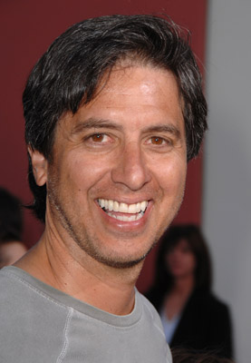

#3274 Loooser - How to win and lose a Casino
Alternativ: The Grand


 IMDB-Wertung: 6.0 / 10
IMDB-Wertung: 6.0 / 10  Metascore: 57
Metascore: 57 
In einem Hotel in Las Vegas findet das international besetzte Pokerspiel Grand Championship of Poker statt. Zu den Teilnehmern gehört Jack Faro, ein als Frauenheld geltender Enkelsohn eines verstorbenen Casinobesitzers. Faro hofft, der Sieg im Turnier würde ihm ermöglichen, die Übernahme der Immobilie durch einen Investor zu verhindern. Seth Schwartzman wird von seiner Tochter Lainie und von seinem Sohn Larry – den er häufig kritisiert – begleitet. Weitere Teilnehmer sind der Amateur Andy Andrews, der vom Pokerspiel wenig versteht, aber durch Glück alleine sehr erfolgreich ist und „der Deutsche“, dessen wahrer Name niemand kennt und der sich durch das Töten kleinerer Tiere motiviert. Zu den Favoriten gehören neben Faro auch der professionelle Pokerspieler Larry Schwartzman und Harold Melvin, der unter dem Asperger-Syndrom leidet und dessen Leben von seiner Mutter beherrscht wird.
Jahr: 2007
Dauer: 104 Minuten
FSK: 12
Land: USA Studio: Anchor Bay EntertainmentTonspuren: DTS - ,
Untertitel: Deutsch,
Auflösung: 1080p (1920x1080) Größe: 5765 MB
Genre: Komödie
Regisseur: Zak Penn
Drehbuch: Zak Penn, Matt Bierman
Soundtrack: Stephen Endelman
Darsteller:
 Woody Harrelson als One Eyed Jack Faro
Woody Harrelson als One Eyed Jack Faro David Cross als Larry Schwartzman
David Cross als Larry Schwartzman Dennis Farina als LBJ 'Deuce' Fairbanks
Dennis Farina als LBJ 'Deuce' Fairbanks Cheryl Hines als Lainie Schwartzman
Cheryl Hines als Lainie Schwartzman Richard Kind als Andy Andrews
Richard Kind als Andy Andrews Chris Parnell als Harold Melvin
Chris Parnell als Harold Melvin Werner Herzog als The German
Werner Herzog als The German Jason Alexander als Dr. Yakov Achmed
Jason Alexander als Dr. Yakov Achmed-  Ray Romano als Fred Marsh
 Mike Epps als Reggie Marshall
Mike Epps als Reggie Marshall Judy Greer als Sharon Andrews
Judy Greer als Sharon Andrews- Gabe Kaplan als Seth Schwartzman
 Michael McKean als Steve Lavisch
Michael McKean als Steve Lavisch- Julie Claire als Dr. Jamie Sellers
 Barry Corbin als Jimminy 'Lucky' Faro
Barry Corbin als Jimminy 'Lucky' Faro Shannon Elizabeth als Toni
Shannon Elizabeth als Toni Estelle Harris als Ruth Melvin
Estelle Harris als Ruth Melvin- Andrew Hill Newman als Russell Kalenich - The Dealer
 Andrea Savage als Renee Jensen
Andrea Savage als Renee Jensen- Phil Gordon als Himself
- Doyle Brunson als Poker Pro
- Phil Hellmuth Jr. als Poker Pro
- Daniel Negreanu als Poker Pro
 Hank Azaria als Mike 'The Bike' Heslov
Hank Azaria als Mike 'The Bike' Heslov David Pressman als Melville 'Murph Murph' Murphy
David Pressman als Melville 'Murph Murph' Murphy- Brett Ratner als 'Sob Story' Barry Blaustein
- Avi Arad als Abdul Shavit
- K.D. Aubert als Julie the Waitress
 Tommy 'Tiny' Lister als German's Bodyguard
Tommy 'Tiny' Lister als German's Bodyguard- Tim Mikulecky als Bitch Slapped Man
 Rusty Meyers als Long Island Poker Player
Rusty Meyers als Long Island Poker Player Peter O'Meara als Dave Esme
Peter O'Meara als Dave Esme- Alec Holden als Little Larry
- Hailey McCann als Little Lainie
- Orly Shani als Lavisch's Assistant
- Garrett McKechnie als Hotel Guest
- Sean Patrick Flaherty als Sean Marsh
- Harvey Blanc als Bell Desk Captain , uncredited
- Barry Brandt als Poker Player , uncredited
- Kelly Catey als Lavicsh's Assistant , uncredited
 Paul Edney als Poker Tournament Pit Boss , uncredited
Paul Edney als Poker Tournament Pit Boss , uncredited- Alistair David Herz als Police Offier #1 , uncredited
- Melinda Kramer als Poker Dealer , uncredited
 Riley G. Matthews Jr. als Poker Player , uncredited
Riley G. Matthews Jr. als Poker Player , uncredited- Brahm Taylor als Rex Copeland , uncredited
- Michael Karnow als Mike Werbe
- Robert Thompson als Himself - Tournament Director
- Andy Bellin als Poker Pro
- Antonio Esfandiari als Poker Pro
- Phil Laak als Poker Pro
Datei: X:\2007(G-M)\Loooser - How to win and lose a Casino (2007, FSK12, 1920x1080).mkv seit 26.02.2016
Festplatte: HD 2007(A-Z)-2008(A-F)
 Es gibt insgesamt 64 Filme in der Gruppe '2007(G-M)'
Es gibt insgesamt 64 Filme in der Gruppe '2007(G-M)'